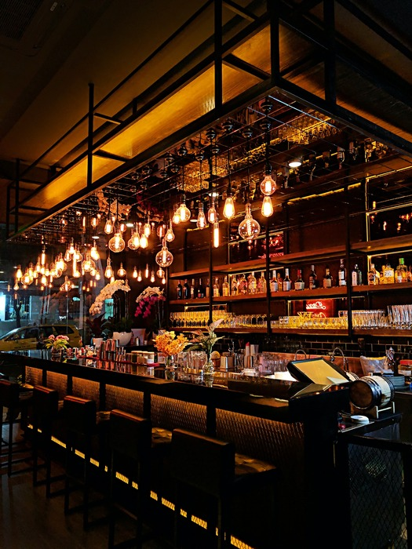
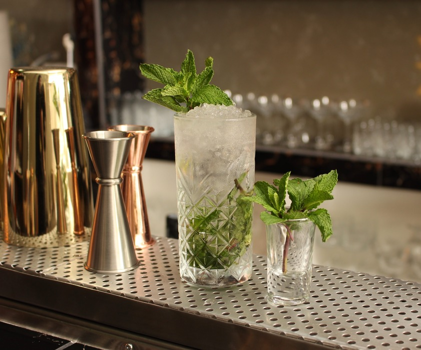
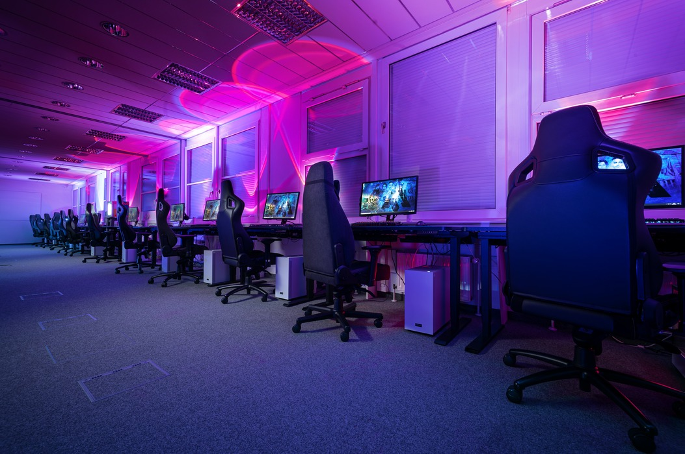

Mijn intresses zijn op cafe gaan met vrienden en gamen.
Het samenkomen met vrienden om te genieten van een drankje en gamen is een fantastische manier om te ontspannen en te genieten van elkaars gezelschap. Deze hobby's bieden niet alleen een gelegenheid om te ontstressen, maar ook om sterke banden te smeden en onvergetelijke herinneringen te creëren. Het gezellige samenzijn met vrienden, vergezeld van een verfrissend drankje, zorgt voor een informele en ontspannen sfeer. Het delen van verhalen, lachen om grappen en het bespreken van allerlei onderwerpen, allemaal terwijl je geniet van je favoriete drankje, maakt deze momenten echt bijzonder. Of het nu gaat om een koud biertje, een verfijnde wijn of een heerlijke frisdrank, de keuze aan drankjes draagt bij aan de diversiteit en het plezier van de ontmoeting.
Daarnaast voegt gamen een extra dimensie toe aan deze bijeenkomsten. Het competitieve element, de uitdagingen en het plezier van het samen spelen van verschillende spellen brengt een opwindende energie met zich mee. Of het nu gaat om coöperatieve spellen waarbij teamwork vereist is of om het elkaar uitdagen in competities, het gamen versterkt de band tussen vrienden en zorgt voor gedeelde ervaringen die lang bijblijven. De combinatie van deze twee activiteiten weerspiegelt niet alleen ontspanning, maar ook sociale interactie en teamgeest. Het genot van het samenzijn met vrienden, of het nu in persoon is of online, versterkt de vriendschappen en zorgt voor momenten vol plezier en gelach. Kortom, het genieten van een drankje in goed gezelschap gecombineerd met de opwinding van gamen creëert een unieke en verrijkende ervaring. Het zijn deze momenten die zorgen voor een welkome afwisseling in het dagelijks leven en waardevolle herinneringen vormen die een leven lang meegaan.